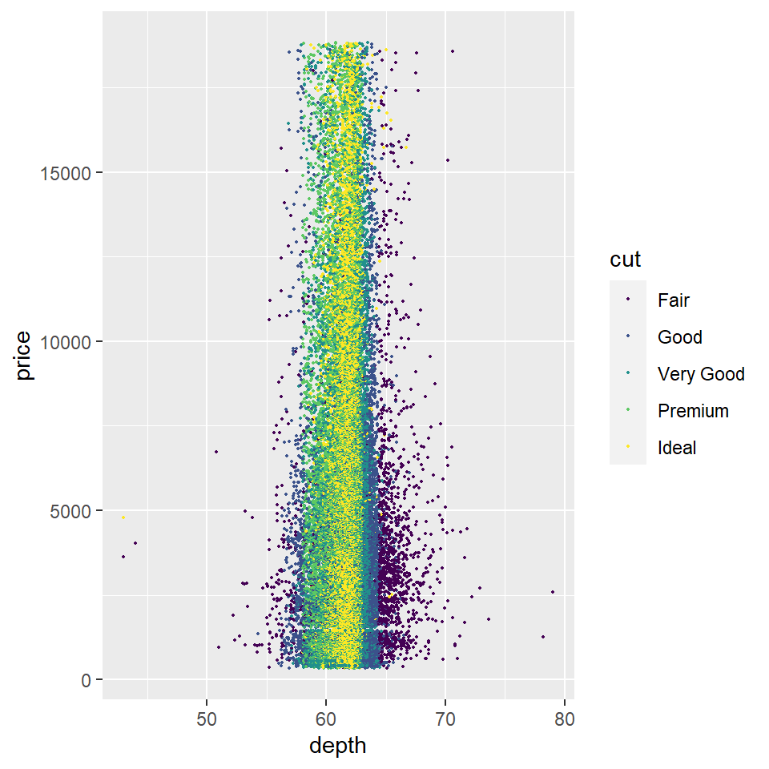
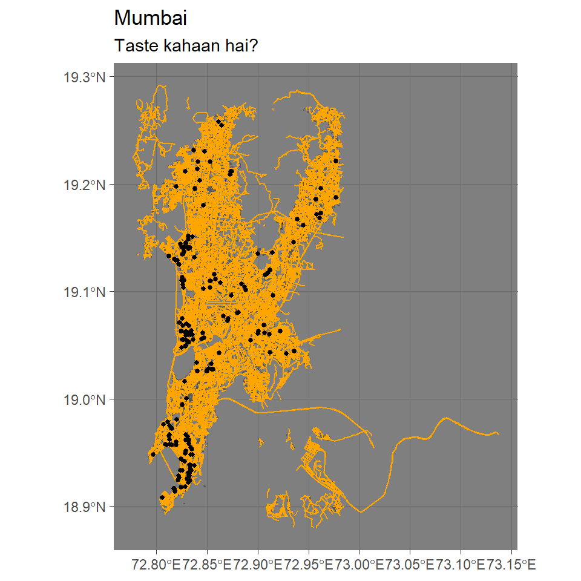

## # A tibble: 53,940 x 10
## carat cut color clarity depth table price x y z
## <dbl> <ord> <ord> <ord> <dbl> <dbl> <int> <dbl> <dbl> <dbl>
## 1 0.23 Ideal E SI2 61.5 55 326 3.95 3.98 2.43
## 2 0.21 Premium E SI1 59.8 61 326 3.89 3.84 2.31
## 3 0.23 Good E VS1 56.9 65 327 4.05 4.07 2.31
## 4 0.29 Premium I VS2 62.4 58 334 4.2 4.23 2.63
## 5 0.31 Good J SI2 63.3 58 335 4.34 4.35 2.75
## 6 0.24 Very Good J VVS2 62.8 57 336 3.94 3.96 2.48
## 7 0.24 Very Good I VVS1 62.3 57 336 3.95 3.98 2.47
## 8 0.26 Very Good H SI1 61.9 55 337 4.07 4.11 2.53
## 9 0.22 Fair E VS2 65.1 61 337 3.87 3.78 2.49
## 10 0.23 Very Good H VS1 59.4 61 338 4 4.05 2.39
## # ... with 53,930 more rows
## $title
## [1] "Depth"
##
## attr(,"class")
## [1] "labels"